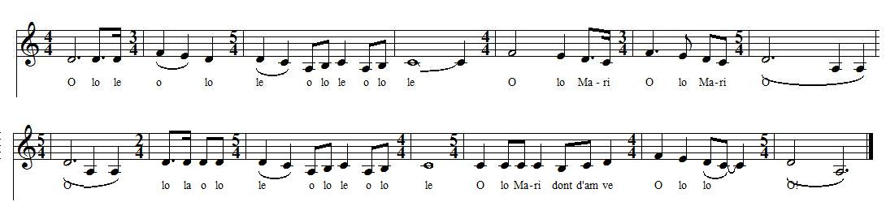

L'appel des pâtres
Shepherds' Halloo
Dialecte de Cornouaille
|
- p.20 "Disul vintin a pe savan": vers 1.1 à 1.2, 2.1 à 2.2 et 6.4 - pp.44 et 147 "Son amour" : vers 3.5 - 3.6 et 4.1 à 4.4. - p. 59 "Son ar cloarec" : vers 2.1 et 2.2. - pp. 215 et 216 "Me uel erru ma mestresik": vers 4.1 - p. 263 "Devat dorch hu va mestrezik": strophe 4 - Publié par La Villemarqué en traduction seulement dans l'"Echo de la Jeune France" du 1.10.1837, sous le titre "Chant des Pâtres" |
- p.20 "Disul vintin a pe savan": lines 1.1 to 1.2, 2.1 to 2.2 and 6.4. - pp.44 and 147 "Son amour" : lines 3.5 - 3.6 and 4.1 to 4.4. - p. 59 "Son ar cloarec" : lines 2.1 and 2.2. - pp. 215 and 216 "Me uel erru ma mestresik": line 4.1 - p. 263 "Devat dorch hu va mestrezik": strophe 4 - Published by La Villemarqué in translation only in the journal "Echo de la Jeune France" from 1.10.1837, titled "Shepherds' Song" |
.
Mélodie du Barzhaz
(Sol majeur: d'après l'harmonisation de Friedrich Silcher dans l'édition allemande de 1841)
Mélodie N°2
Chantée par Jean Le Meut pour la version vannetaise "Disul vitein a pe zaüen"

Mélodie N°3
Authentique "Hollaïka" de Cornouaille - Mode locrien.
(Tiré de "Les 15 modes de la musique bretonne de Maurice Duhamel)
| Français | Français | English |
|---|---|---|
|
1. Je conduisais ce dimanche
Matin mes vaches aux champs, J'entendis chanter ma douce Et je reconnus son chant, J'entendis ma chanter ma douce, Chanter gaiement sur le mont. Et pour chanter avec elle J'ai troussé cette chanson. 2. -Lorsque je vis mon amie La toute première fois, Ma Margot faisait ses Pâques Et sa profession de foi. A Fouesnant, notre paroisse, Avec les autres enfants. Elle avait douze ans à peine Et je n'étais pas plus grand. 3. De même que l'églantine Ou bien le jaune genêt Se détachent sur la lande Tous elle les éclipsait. Et pendant toute la messe, Que pour elle je n'eus d'yeux. Plus je la voyais, plus elle Me faisait oublier Dieu. 4. Dans le jardin de ma mère, Ploie sous les fruits, un pommier Sur une verte pelouse Au pied de l'arbre un bosquet. Quand ma douce viendra-t-elle, Ma tant aimée, pour me voir, Que nous allions sous l'ombrage Ensemble attendre le soir? 5. Et la pomme la plus rouge Pour elle je cueillerais. Je ferais une guirlande Mais un souci j'y mettrais: Un souci flétri, symbole De l'affliction que j'ai De n'avoir pas reçu d'elle L'aumône d'un doux baiser. 6. - Ca, voulez-vous bien vous taire! Assez d'appels et de chants! Quiconque part pour la messe, Dans la vallée, nous entend. Quand nous serons, sur la lande - Et seuls, cela vaudrait mieux -, Un baiser d'amour sincère Vous aurez... peut-être deux. Trad. Christian Souchon (c) 2008 |
1. En menant mes troupeaux, dimanche à la campagne,
J'ouïs chanter Maïté et reconnus sa voix; J'ouïs sa douce voix du haut de la montagne, Et ma chanson suivit sa chanson dans les bois. 2. - Le jour où je connus ma gentille Maïté, Etait un jour de Pâque; avec tous les enfants, Je la vis approcher de la table bénite; J'avais douze ans alors, comme elle aussi, douze ans; 3. Elle brillait parmi, comme dans les bruyères Resplendit l'aubépine ou les genêts en fleur; Pour elle, j'oubliais l'office et les prières; Plus je la regardais et plus l'aimait mon cœur. 4. Nous avons un pommier au courtil de ma mère, A ses pieds un gazon, un bosquet alentour; Quand ma douce viendra visiter ma chaumière, A l'ombre du pommier nous causerons d'amour. 5. Je veux cueillir le fruit le plus rouge pour elle. Et lui faire un bouquet, mais avec un souci, Un souci tout fané, -car jamais de ma belle N'ai reçu le baiser d'amoureuse merci. 6. - Taisez-vous, taisez-vous! Voyez-vous cette bande De pèlerins qui passe, et nous cherche des yeux?... Mais qu'un nouveau hasard nous rassemble à la lande, Vous aurez un baiser d'amour... peut-être deux! Traduction en vers de La Villemarqué |
1. Last Sunday morning I got up
To drive my cows to the lea. I heard my girl who was singing. Her voice was full of high glee. I heard my girl who was singing On the mountain merrily, And I started making this song, Just to keep her company. 2. - When I saw her for the first time Pretty Maggie, my dear one, Was doing her Easter duties In the old church of our town. It the old church of Fouesnant And so did many a child. She was only twelve at that time. Twelve of age also was I. 3. Like the yellow bright broom flower Or the tiny briar-rose, Briar rose upon the heather She stood out among all those. During all mass I did nothing But at the girl look and look And while I was looking at her A fancy to her I took. 4. In the garden of my mother Stands a fruitful apple tree. At its foot there is a green bush It stands amidst a green lea.. If my pretty girl some day comes To my house on a visit, My sweetheart and me, together, In its shadow we shall sit. 5. I shall pick the reddest apple. I'll make for her a posy. And a marigold that I like Among all these flowers will be. Withered shall be this marigold To mark my disillusion That I have got from her no kiss Whom I have loved for so long. 6. Hush, my friend! Enough of this song! Stop this chatter presently! People that are going to mass May hear you, in the valley. Another day on the heather Aye and of all unheard, too I'll give you of love a token One little kiss... maybe two! Transl. Christian Souchon (c)2008 |
Cliquer ici pour lire les textes bretons.
For Breton texts, click here.

|
Résumé
Chanson d'un pâtre à la louange de son amie. Ce qui lui vaut le nom d'"Hollaika" c'est qu'elle est précédée d'un appel répété, trois fois lancé d'une montagne à l'autre: Hollaika, hollaika, hollaika Tinaik-la deuz aman! Petite Tina, viens ici! N'in ket-da! ou Me ya, ya! Je ne viens pas! ou Oui, j'arrive! Monts et vallées . Marseille n'a pas le monopole de la galéjade: La plus haute "montagne" de Bretagne culmine à 380 m (ou 391 m en comptant la chapelle qu'on y a édifiée). A moins que ce ne soit le "Tuchenn Kador" (Signal de Toussaines) avec ses 384 m qui est, lui, dépourvu de chapelle. S'il faut en croire La Villemarqué, il n'en reste pas moins qu'avec ses faibles reliefs, le Massif Armoricain, aurait conduit les bergers à créer un système d'appels qui évoque la langue sifflée, bien plus perfectionnée, des îles Canaries. Le fait est confirmé par Maurice Duhamel (1884-1940) qui cite dans son étude "Les quinze modes de la musique bretonne", un appel des pâtres de Cornouaille qu'on trouvera plus haut. Le poème de La Villemarqué a été composé à partir d'au moins cinq chants consignés dans ses manuscrits. Cependant la phrase "An dud o vont d'an oferenn zo en-traoñ hor selaou" (les gens qui vont à la messe et qui sont en bas nous écoutent) qui, seule, évoque un appel d'une colline à l'autre et justifie le titre donné au chant à partir de 1845, ne figure dans aucun d'eux. Dans l'édition de 1839 d'où est absent le chant précédent, l'argument de la présente pièce décrit la fête des enfants: un pique-nique qui se prolonge jusqu'au soir. C'est ce "vieux chant des pâtres" que les enfants reprennent en chœur en rentrant chez eux. Et La Villemarqué n'hésite pas à agrémenter son tableau bucolique d'un mensonge qui disparaîtra des éditions suivantes: "Que de fois ne l'avons-nous pas chanté nous-même dans notre enfance, alors que nous ne parlions d'autre langue que le breton!" Il est désormais indéniable que le jeune barde connaissait le breton, mais il est impensable que ses aristocratiques parents se soient abstenus de lui parler français. Fleurs et fruits |
Résumé
A song extolling a shepherd's sweetheart. The name "Hollaika" hints at its being preceded by threefold hallooing from mount to mount: Hollaika, hollaika, hollaika Tinaik-la deuz aman! Little Corentine, come here! N'in ket-da! ou Me ya, ya! I don't come! or Yes, I'm coming! Mounts and valleys . Marseilles people have no monopoly for exaggeration: The highest "mount" of Brittany is the Mont Saint Michel de Brasparts with a height of 380m (1225 ft -or 391 m with the chapel standing atop) or the "Tuchenn Kador" (Signal de Toussaines) that has a height of 384 m -and no chapel on it. But even on the fairly flat Armorican Massif heights, shepherds found it convenient, so says La Villemarqué anyway, to communicate with a code based on hallooing - like the far more sophisticated whistling language on the Canary Islands -. This is corroborated by Maurice Duhamel (1884-1940) Who quotes in his study "The fifteen modes in Breton music", a Cornouaille shepherds' halloo (link above). The poem of La Villemarqué combines at least five songs recorded in his manuscripts. However the line "An dud o vont d'an oferenn zo en-traoñ hor selaou" (people going to mass, down there, are listening to us), the only one that hints at some kind of hallooing from hill to hill and would justify the title given to the song as from 1845, is missing in all of them. In the 1839 edition which does not include the foregoing song, the argument to the present piece depicts the children's feast: a picnic lasting till sunset. Then they would return home, singing in chorus this "old shepherds' song". La Villemarqué did not refrain from adorning his pastoral idyll with a barefaced lie which he was wise enough to withdraw from the ensuing issues of his book: "How often did I sing this ditty when I was a boy who spoke no other language than Breton!" Though nobody can now deny that he had a fair command of that language, who could imagine that his aristocratic parents had made a point not to speak French to him? Flowers and fruits |
Arrangement de Fr. Silcher